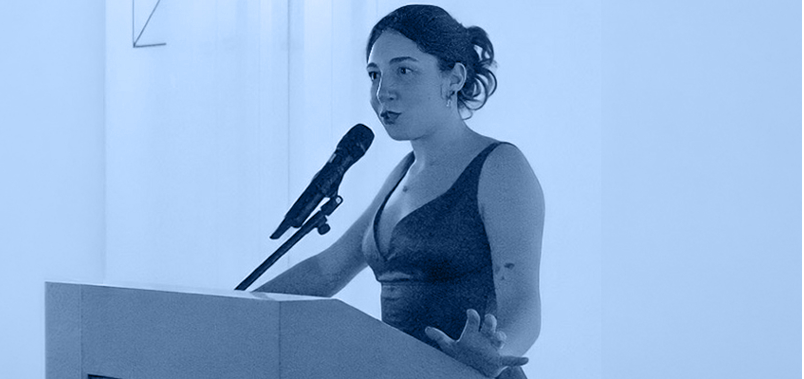

La nostra
STORIA
Dal 2016, abbiamo incontrato persone e realtà straordinarie con cui abbiamo sviluppato progetti ricchi di emozione, gioia e valore sociale.
Ci siamo occupati di inclusione sociale, primo soccorso pediatrico, bambini con cardiopatie congenite, prevenzione, educazione e tanto altro.
Ma il nostro percorso non finisce qui: vogliamo fare ancora molto di più, perché, come recita un vecchio detto siciliano, "Fai del bene e scordatelo."
La nostra
MISSIONE
"La mano che aiuta la mano" non è solo un pay-off, ma la sintesi di ciò che siamo e di ciò che vogliamo costruire ogni giorno. Crediamo nella forza delle connessioni umane, nell'idea che una mano tesa possa incontrarne un'altra per dare vita a un cambiamento reale.
Per noi aiutare significa fare squadra, creare reti di persone e organizzazioni capaci di generare un impatto positivo e duraturo. Ogni iniziativa che portiamo avanti è guidata dall'ascolto, dalla collaborazione e dal desiderio di trasformare le buone intenzioni in risultati concreti per la comunità.
Il manifesto
In A-Tono ETS le nostre azioni nascono da ciò in cui crediamo profondamente. Questo è il nostro Manifesto: i valori che ci guidano ogni giorno.
Governance e
STATUS
A-Tono the world in your hand ETS (Codice Fiscale 97737800157) è stata costituita come associazione il 18 gennaio 2016 ed è riconosciuta come Organizzazione Non Governativa (ONG) ai sensi dell'art. 28 della legge 49/1987.
Dal 4 aprile 2016 è iscritta all'elenco delle Organizzazioni della Società Civile, come previsto dall'art. 26 della legge 125/2014 (decreto n. 2016/337/000155/5).
Dal 5 maggio 2025 è ufficialmente iscritta al RUNTS (Registro Unico Nazionale del Terzo Settore).